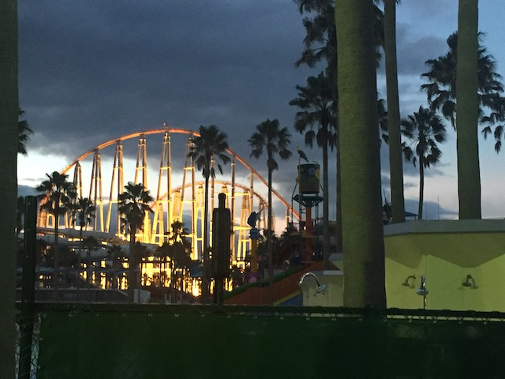
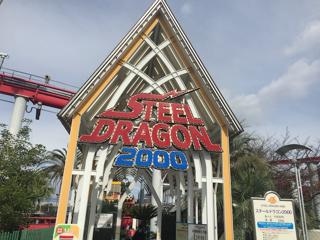
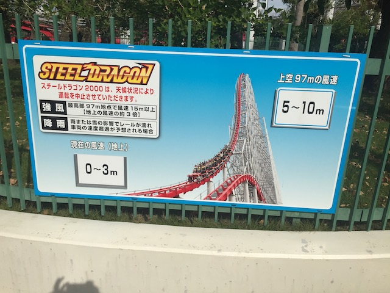

| |
Steel Dragon 2000 Review

We're here at Nagashima Spaland, where we will be riding Steel Dragon 2000. This is an intersting ride. It's one of the few giga coasters in the world, with only 5 (soon to be 6) in the world, and this is the only one in the world that was built by Chance Morgan. Certainly not a company that you would expect to make a giga coaster. Now Steel Dragon was inspired by (oddly enough) Mamba. And as such, it is essentially built like the rest of the Morgan Hyper Trio (particuarlly Wild Thing). So it kind of rides like them, except taller and faster. OK, Steel Dragon is a bit more forceful than all the others, so it's the best of the bunch (even if its not part of the Morgan Trio). All right. Let's get riding. We see the trains and....what the hell is this!? This is a Morgan coaster. So....why the hell are there B&M Hyper trains on this ride!? Seriously, I don't get it. And there are also foot restraints, so you can't raise your legs on the ride like with most B&M Hypers. So that's a mild bummer. But yeah. Get in the cars, put on the seatbelt, pull down the clamshell restraint, and away we go! We roll around a turn and begin climbing the monsterous lifthill. It's a normal lifthill, but because it's so big, you've got a long way to go. Well, at least you get a great view of Nagashima Spaland, the surrounding town, as well as out into the Pacific Ocean. Eventually, we reach the top, lean foreward, and go down the first drop. This is very much like the first drop on all of the Morgan Trio Coasters, just bigger and faster. Now, I like it. It's a lot of fun. But...all the other giga coasters have better first drops since...they're steeper. We then rise up the 2nd hill, which....this thing is big. It's bigger than most coasters first drop, and we still have some speed up there. And even get a little airtime. And then we drop back down to the ground. Yeah.This ride is FAST!!! VERY fast!!! We then rise up again, this hill is essentially, the size of an average hyper coaster. So...yeah. It's a very big ride. And then we go down the spiral drop and into....the noodly bit part of the ride. We head into a big sort of curved hill. There aren't a ton of laterals, but it just maintains all of the speed, and is a ton of fun. Hmm. Kind of like Millenium Force. We then go into a spiral curved hill in the opposite direction. And...there's a little bit of laterals here, but mostly just another curve to show off our speed and just have a ton of fun. Now we come to the awkward part of the ride. The big turn into the straight track. This is the part of the ride where they built the noodly section, they built all the bunny hops at the end, and then they just used RCT3 Auto-Complete to connect the two parts of the ride. Also, there's a midcourse brake run here, so that takes away a bit of our speed, but it's not too good. We still got plenty left, and now we get into the best part of the ride. The bunny hops. We dip down and go into Bunny Hop #1. There's actually a bit of floater air here. WEE!!! We then TAKE THE TUNNEL!!! Also, there's an entire bunny hop in the middle of this tunnel. So YAY!!! AIRTIME IN THE DARK!!! We then rise up into another bunny hop! YAY!!! FLOATER AIR!!! Go into Bunny Hop #4, and the process repeats. Though something cool is happening now. Headchoppers. This bunny hop is completely buried in the structure of the ride. Which is pretty cool. We rise up into another bunny hop, and TAKE ANOTHER TUNNEL up at the top. We come out of that tunnel, go through another bunny hop, get another pop of airtime, rise up, and glide right into the brake run. So yeah. Steel Dragon 2000 is a very fun ride. It really is essentially just another version of the Morgan Hyper Trio, except taller, faster, with more airtime, and is just a more fun ride. Yeah. I will admit that it's my least favorite of the four Giga coasters I've ridden. But not by that much. It really is a fun ride. Sure it's not the best ride at Nagashima Spaland since I'm presuming Hakugei is the best ride. But even Pre-Hakugei, Arashi is the best ride in the park. But it is a ton of fun, is fairly unique, and is totally worth checking out.
8/10
Location: Nagashima Spaland
Opened: 2000
Built by: Morgan
Last Ridden: October 31, 2018
Steel Dragon 2000 Photos





Home
|